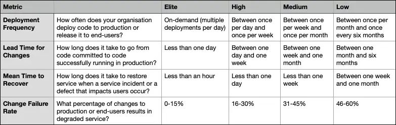

What are DORA metrics?
DORA stands for The DevOps Research and Assessment team. Within a seven-year program, this Google research group analyzed DevOps practices and capabilities and has been able to identify four key metrics to measure software development and delivery performance.
The health and performance of a product engineering team can be assessed using four key metrics.
The Four DORA Metrics
- Deployment Frequency
- Lead Time for Changes
- Mean Time to Recover
- Change Failure Rate
Deployment Frequency
How often does your organization deploy code to production or release it to end-users?
Higher performing teams will generally deploy more often, with a standard being at least once per week.
- Elite: On-demand (multiple deployments per day)
- High: Between once per day and once per week
- Medium: Between once per week and once per month
- Low: Between once per month and once every six months
Lead Time for Changes
How long does it take to go from code committed to code successfully running in production?
This metric indicates the velocity of software delivery, measuring the time between creating a commit and deploying this change to production.
- Elite: Less than one day
- High: Between one day and one week
- Medium: Between one week and one month
- Low: Between one month and six months
Mean Time to Recover
How long does it take to restore service when a service incident or a defect that impacts users occur?
Unplanned outages or incidents happen to even the highest performing team, tracking how much time it takes for a service to bounce back from failure demonstrates the team's ability to recover a system. Shorter recovery times build confidence.
- Elite: Less than an hour
- High: Less than one day
- Medium: Less than one week
- Low: Between one week and one month
Change Failure Rate
What percentage of changes to production or end-users results in degraded service?
CFR is a true measure of quality and stability of a team's delivery process and the resulting system.
- Elite: 0-15%
- High: 16-30%
- Medium: 31-45%
- Low: 46-60%
Bonus: Reliability Metric
In 2021, the DORA team added a fifth metric — reliability — to the list of things that can impact organizational performance.
Historically we have measured availability rather than reliability, but because availability is a specific focus of reliability engineering, we’ve expanded our measure to reliability so that availability, latency, performance, and scalability are more broadly represented.
Summary Chart
